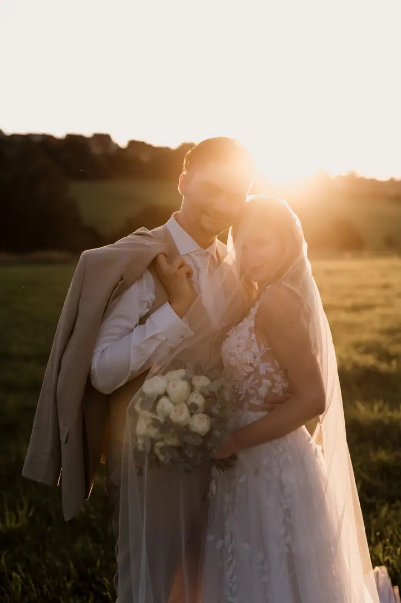
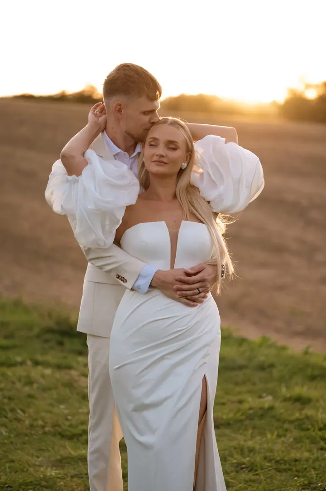
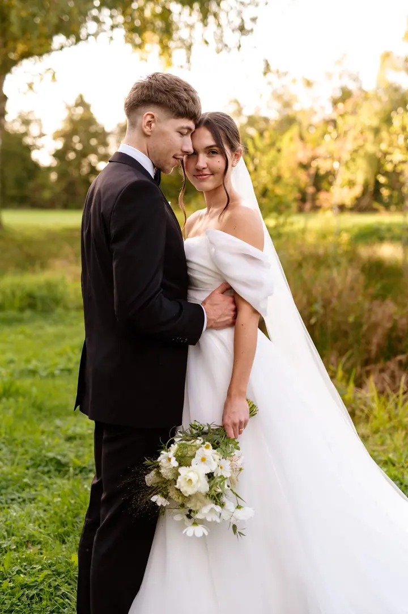
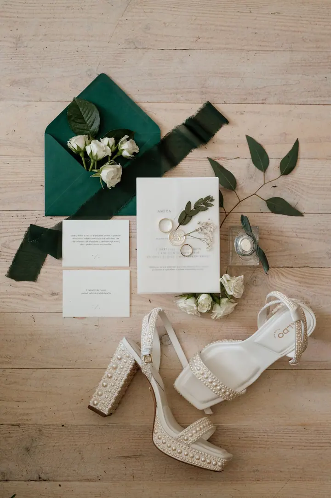

jedna
Svatební fotografie
Fotím přirozeně a nestylizuji nadmíru, aby fotky ukázaly váš den takový, jaký byl. Ke svatebním fotkám nabízím také krátké video v délce cca 30–45 sekund pro sociální sítě.

Svatební a portrétní fotografka · Brno, Bučovice, Slavkov u Brna

Jmenuji se Lenka Goliášová, žiji na jižní Moravě a fotím hlavně svatby a portréty. Nejradši pracuji s přirozeným světlem zlaté hodinky, proto focení ráda plánuji na konec dne.
Více o mně
Co fotím
jedna
Fotím přirozeně a nestylizuji nadmíru, aby fotky ukázaly váš den takový, jaký byl. Ke svatebním fotkám nabízím také krátké video v délce cca 30–45 sekund pro sociální sítě.
Fotím venku jako klidnou procházku v přírodě nebo ve městě, anebo jako glamour focení v mém ateliéru v Bučovicích. Tam je vizáž a úprava vlasů v ceně.
Fotím v přírodě, u vás doma nebo na místě, kde se cítíte dobře. Chci, aby vám fotky připomínaly hlavně to, jak jste se spolu cítili.
Portrét může být vysoce stylizovaný, profesní nebo zcela klasický, třeba na web nebo pro vaši prezentaci. Nejradši fotím venku za přirozeného světla. Fotit můžu i ve vaší kanceláři.
V létě klidně fotíme i v sedm večer.

Za objektivem
Ahoj, jsem Lenka, fotografka z Brna, a fotím po celé republice. Zaměřuji se převážně na svatební a portrétní fotografii, ale ráda zaznamenám i vaše těhotenství nebo rodinu. Mým cílem je vytvořit vám přirozeně působící fotografie, ze kterých bude i po letech dýchat kouzlo daného okamžiku.
Při focení se mnou se nemusíte ničeho obávat. Ráda vás povedu a řeknu vám, co a jak, abyste se před foťákem cítili dobře. U párů se vás snažím rozhýbat, aby přišel ten správný příval energie a já mohla zachytit vaše úsměvy.
Nejčastěji pracuji s přirozeným světlem při zlaté hodince a s jemným sluncem. Proto se snažím domlouvat focení na konec dne, případně na ráno. V létě tak není výjimkou, že fotit vyrazíme i v sedm večer.
Lenka
Napište mi nebo zavolejte, kdy a kde se chystáte fotit. Domluvíme termín i to, co od fotek čekáte.
Focení se snažím naplánovat na zlatou hodinku, tedy na konec dne nebo na ráno, kdy je světlo nejjemnější.
Povedu vás a řeknu vám, co a jak. Nemusíte mít s pózováním žádné zkušenosti, stačí být sami sebou.
Hotové fotky dostanete do soukromé webové galerie. Odtud si je stáhnete v plné velikosti a rovnou si můžete objednat tisk.
Portfolio
Otázky
Ano. Nejčastěji fotím v okolí Brna, Slavkova u Brna a Bučovic, ale přijedu za vámi kamkoliv po republice.
Nemusíte se ničeho obávat. Celým focením vás provedu a poradím vám, jak stát i kam se dívat, aby fotky působily přirozeně.
Ano, ke svatebním fotkám nabízím krátké video v délce cca 30–45 sekund. Je to rychlý průřez celým dnem, ideální pro sociální sítě.
Focení rodin, párů, těhotenství nebo portrétů venku stojí 3000 Kč. Zahrnuje cca 50 minut focení a 20 upravených fotografií, každá další je za 250 Kč.

Napište pár vět o tom, co si představujete. · +420 776 516 861